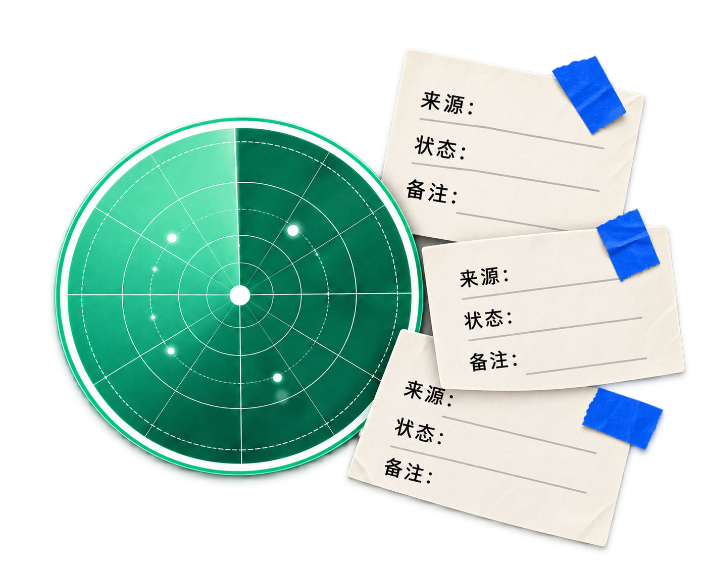

SunJob
Radar
岗位很多，
判断却没有出处。

01 / 问题
信息分散，记录容易失去上下文。
02 / 判断
先把来源、状态和判断依据留在身边。
03 / 实现
本地筛选、记录与导出，保持过程可回看。
SunJobRadar 是本地优先的求职工作台。它不自动投递，也不提供持续后台监测、云端个人空间或内置 AI 匹配。
岗位很多，
判断却没有出处。

信息分散，记录容易失去上下文。
先把来源、状态和判断依据留在身边。
本地筛选、记录与导出，保持过程可回看。
SunJobRadar 是本地优先的求职工作台。它不自动投递，也不提供持续后台监测、云端个人空间或内置 AI 匹配。